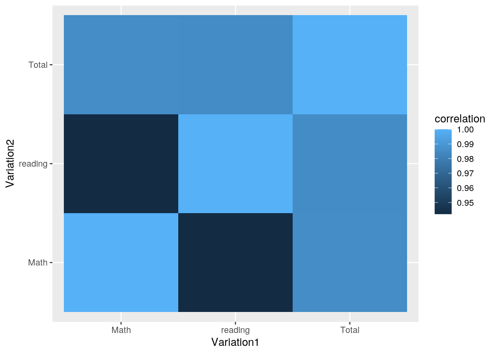
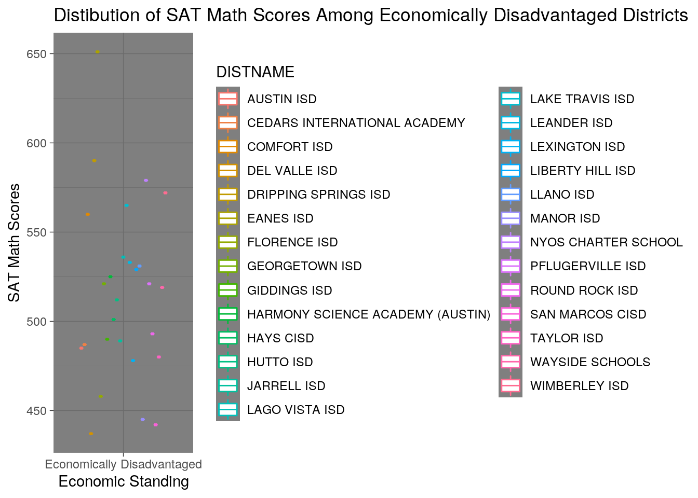
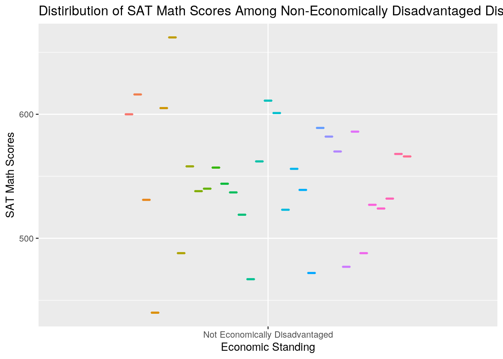

library("tidyverse")## ── Attaching packages ───────────────────────────────────────────────────────────────────── tidyverse 1.3.0 ──## ✓ ggplot2 3.3.2 ✓ purrr 0.3.4
## ✓ tibble 3.0.3 ✓ dplyr 1.0.1
## ✓ tidyr 1.1.1 ✓ stringr 1.4.0
## ✓ readr 1.3.1 ✓ forcats 0.5.0## ── Conflicts ──────────────────────────────────────────────────────────────────────── tidyverse_conflicts() ──
## x dplyr::filter() masks stats::filter()
## x dplyr::lag() masks stats::lag()library(readxl)
district13 <- read_excel("~/SAT_District_Data_Class_2018 (1) (2).xlsx")
SATscores <- read_csv("~/REGION_13_DISTRICT_summary_20 (1).csv")## Parsed with column specification:
## cols(
## `AGGREGATION LEVEL` = col_character(),
## REGION = col_double(),
## DISTNAME = col_character(),
## DISTRICT = col_double(),
## CHARTER_STATUS = col_character(),
## SECTION = col_character(),
## HEADING = col_character(),
## `HEADING NAME` = col_character(),
## YR20 = col_double()
## )glimpse(district13)## Rows: 54,756
## Columns: 17
## $ Group <chr> "All Students", "African American", "American Ind…
## $ District <chr> "001902", "001902", "001902", "001902", "001902",…
## $ DistName <chr> "Cayuga ISD", "Cayuga ISD", "Cayuga ISD", "Cayuga…
## $ County <chr> "001", "001", "001", "001", "001", "001", "001", …
## $ CntyName <chr> "Anderson County", "Anderson County", "Anderson C…
## $ Region <chr> "07", "07", "07", "07", "07", "07", "07", "07", "…
## $ RegnName <chr> "Kilgore", "Kilgore", "Kilgore", "Kilgore", "Kilg…
## $ ERW <chr> "569", NA, NA, "560", NA, NA, "570", NA, NA, "508…
## $ Math <chr> "540", NA, NA, "555", NA, NA, "538", NA, NA, "505…
## $ Total <chr> "1109", NA, NA, "1115", NA, NA, "1108", NA, NA, "…
## $ Grads_Mskd <chr> "<50", "<25", "<25", "<25", "<25", "<25", "<50", …
## $ Exnees_Mskd <chr> "<25", "<25", "<25", "<25", "<25", "<25", "<25", …
## $ Part_Rate <chr> "35.9", NA, NA, "66.7", NA, NA, "37.5", NA, NA, "…
## $ Crit_Mskd <chr> "<25", "<25", "<25", "<25", "<25", "<25", "<25", …
## $ Above_Crit_Rate <chr> "21.4", NA, NA, NA, NA, NA, "25.0", NA, NA, NA, "…
## $ TSI_Both_Mskd <chr> "<25", "<25", "<25", "<25", "<25", "<25", "<25", …
## $ Above_TSI_Both_Rate <chr> "57.1", NA, NA, "100", NA, NA, "50.0", NA, NA, "2…glimpse(SATscores)## Rows: 4,102
## Columns: 9
## $ `AGGREGATION LEVEL` <chr> "DISTRICT SUMMARY", "DISTRICT SUMMARY", "DISTRICT…
## $ REGION <dbl> 13, 13, 13, 13, 13, 13, 13, 13, 13, 13, 13, 13, 1…
## $ DISTNAME <chr> "AUSTIN ACHIEVE PUBLIC SCHOOLS", "AUSTIN DISCOVER…
## $ DISTRICT <dbl> 227825, 227821, 227821, 227821, 227821, 227821, 2…
## $ CHARTER_STATUS <chr> "OPEN ENROLLMENT CHARTER", "OPEN ENROLLMENT CHART…
## $ SECTION <chr> "A-PARTICIPATION", "A-PARTICIPATION", "A-PARTICIP…
## $ HEADING <chr> "A01", "A01", "A02", "A03", "B10", "B13", "C24", …
## $ `HEADING NAME` <chr> "DISTRICT CUMULATIVE YEAR END ENROLLMENT", "DISTR…
## $ YR20 <dbl> 2013, 479, 19, 24, 13, -999, -999, -999, -999, -9…district13 <- district13 %>% filter(Region == 13) %>% na.omit()
SATscores1 <- SATscores %>% filter(REGION == 13) %>% na.omit()
names(district13)[names(district13) == "District"] <- "DISTRICT"
project <- merge(SATscores1, district13, by="DISTRICT", all = TRUE)
newproject <- project %>% na.omit()newproject <- project %>% select(-c(YR20, HEADING, SECTION, `AGGREGATION LEVEL`, ERW)) %>% na.omit()newproject1 <- newproject %>% select(-c(REGION, DISTRICT, CHARTER_STATUS)) %>% distinct()
names(newproject1)[names(newproject1) == "Group"] <- "Ethnicity"
newproject1 %>% group_by(Ethnicity)## # A tibble: 56,921 x 17
## # Groups: Ethnicity [36]
## DISTNAME `HEADING NAME` Ethnicity DistName County CntyName Region RegnName
## <chr> <chr> <chr> <chr> <chr> <chr> <chr> <chr>
## 1 KATHERI… SPEC. ED. STU… Not Home… Katheri… 105 Hays Co… 13 Austin
## 2 KATHERI… SPEC. ED. STU… Female Katheri… 105 Hays Co… 13 Austin
## 3 KATHERI… SPEC. ED. STU… Not Bil/… Katheri… 105 Hays Co… 13 Austin
## 4 KATHERI… SPEC. ED. STU… Not Econ… Katheri… 105 Hays Co… 13 Austin
## 5 KATHERI… SPEC. ED. STU… Not At-R… Katheri… 105 Hays Co… 13 Austin
## 6 KATHERI… SPEC. ED. STU… Not Spec… Katheri… 105 Hays Co… 13 Austin
## 7 KATHERI… SPEC. ED. STU… Title1 Katheri… 105 Hays Co… 13 Austin
## 8 KATHERI… SPEC. ED. STU… Not CTE Katheri… 105 Hays Co… 13 Austin
## 9 KATHERI… SPEC. ED. STU… Not Dysl… Katheri… 105 Hays Co… 13 Austin
## 10 KATHERI… SPEC. ED. STU… All Stud… Katheri… 105 Hays Co… 13 Austin
## # … with 56,911 more rows, and 9 more variables: Math <chr>, Total <chr>,
## # Grads_Mskd <chr>, Exnees_Mskd <chr>, Part_Rate <chr>, Crit_Mskd <chr>,
## # Above_Crit_Rate <chr>, TSI_Both_Mskd <chr>, Above_TSI_Both_Rate <chr>sat <- newproject1 %>% arrange(Total, desc())
sat$Total <- as.numeric(sat$Total)
sat$Math <- as.numeric(sat$Math)
sat$reading <- (sat$Total - sat$Math)
glimpse(sat %>% mutate(reading = Total-Math))## Rows: 56,921
## Columns: 18
## $ DISTNAME <chr> "GIDDINGS ISD", "GIDDINGS ISD", "GIDDINGS ISD", "…
## $ `HEADING NAME` <chr> "WHITE", "NON SPEC. ED. EXPULSIONS", "NON ECO. DI…
## $ Ethnicity <chr> "Hispanic", "Hispanic", "Hispanic", "Hispanic", "…
## $ DistName <chr> "Giddings ISD", "Giddings ISD", "Giddings ISD", "…
## $ County <chr> "144", "144", "144", "144", "144", "144", "144", …
## $ CntyName <chr> "Lee County", "Lee County", "Lee County", "Lee Co…
## $ Region <chr> "13", "13", "13", "13", "13", "13", "13", "13", "…
## $ RegnName <chr> "Austin", "Austin", "Austin", "Austin", "Austin",…
## $ Math <dbl> 505, 505, 505, 505, 505, 505, 505, 505, 505, 505,…
## $ Total <dbl> 1000, 1000, 1000, 1000, 1000, 1000, 1000, 1000, 1…
## $ Grads_Mskd <chr> "<75", "<75", "<75", "<75", "<75", "<75", "<75", …
## $ Exnees_Mskd <chr> "<25", "<25", "<25", "<25", "<25", "<25", "<25", …
## $ Part_Rate <chr> "31.8", "31.8", "31.8", "31.8", "31.8", "31.8", "…
## $ Crit_Mskd <chr> "<25", "<25", "<25", "<25", "<25", "<25", "<25", …
## $ Above_Crit_Rate <chr> "9.5", "9.5", "9.5", "9.5", "9.5", "9.5", "9.5", …
## $ TSI_Both_Mskd <chr> "<25", "<25", "<25", "<25", "<25", "<25", "<25", …
## $ Above_TSI_Both_Rate <chr> "28.6", "28.6", "28.6", "28.6", "28.6", "28.6", "…
## $ reading <dbl> 495, 495, 495, 495, 495, 495, 495, 495, 495, 495,…newsat <- sat %>% pivot_wider(names_from = Ethnicity)
sat %>% summarise(mean(Math))## mean(Math)
## 1 538.4109sat %>% summarise(mean(Total))## mean(Total)
## 1 1085.06sat %>% summarise(mean(reading))## mean(reading)
## 1 546.6492groupt <- sat %>% select(Ethnicity, Total)
groupm <- sat %>% select(Ethnicity, Math)
groupr <- sat %>% select(Ethnicity, reading)
sat %>% summarise(sd(Total))## sd(Total)
## 1 114.4375sat %>% summarise(sd(Math))## sd(Math)
## 1 58.32286sat %>% summarise(sd(reading))## sd(reading)
## 1 57.80828sat %>% select()## data frame with 0 columns and 56921 rowscormat <- sat %>% select_if(is.numeric) %>% cor(use="pair")
tidycor <- cormat %>% as.data.frame %>% rownames_to_column("Variation1") %>% pivot_longer(-1,names_to="Variation2",values_to="correlation")
library("ggplot2")
tidycor %>%ggplot(aes(Variation1,Variation2,fill=correlation)) + geom_tile()
new <- sat %>% filter(Ethnicity == "Economically Disadvantaged")
old <- sat %>% filter(Ethnicity == "Not Economically Disadvantaged")
plot <- merge(new,old, by="Ethnicity")
clean <- groupm %>% unique() %>% select()
ggplot(data = new, aes(x=Ethnicity, y=Math, color=DISTNAME)) + geom_boxplot() + ggtitle("Distibution of SAT Math Scores Among Economically Disadvantaged Districts") + xlab("Economic Standing") + ylab("SAT Math Scores") + theme_dark()
ggplot(data = old, aes(x=Ethnicity, y=Math, color=DISTNAME)) + geom_boxplot(aes(color=DISTNAME)) + theme(legend.position = 'none') + ggtitle("Distiribution of SAT Math Scores Among Non-Economically Disadvantaged Districts") + xlab("Economic Standing") + ylab("SAT Math Scores") + scale_y_continuous(breaks=seq(0,700,100))